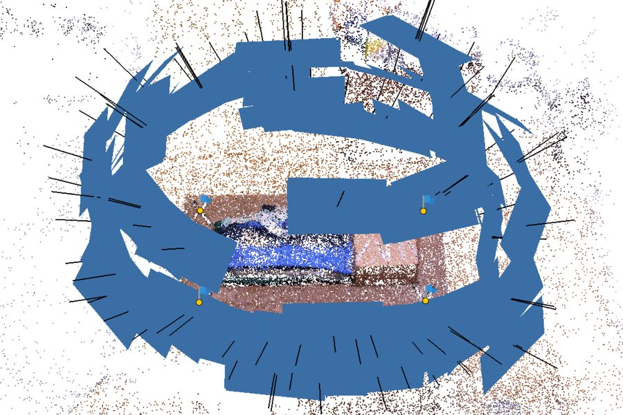
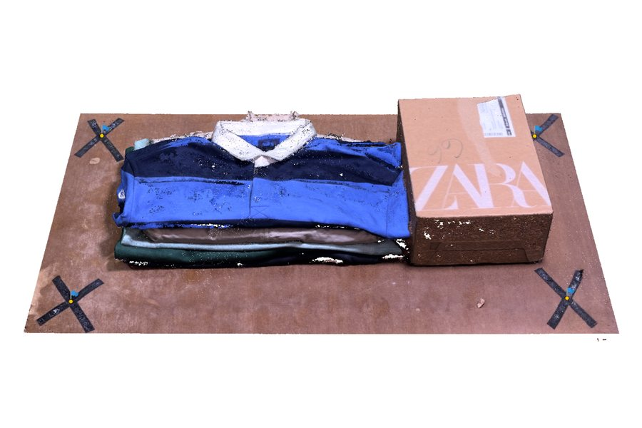
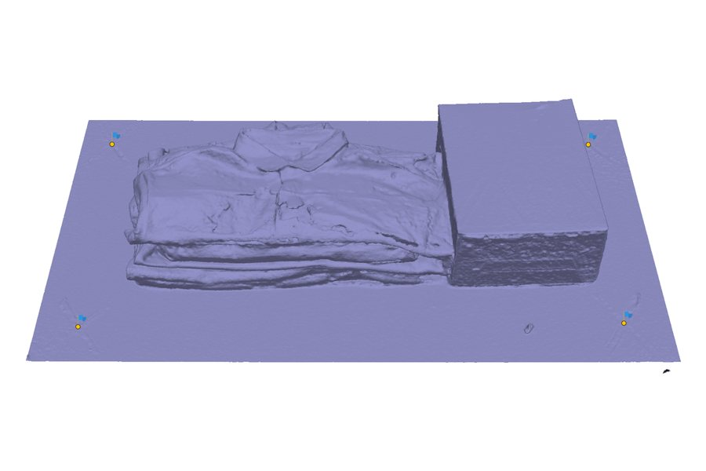
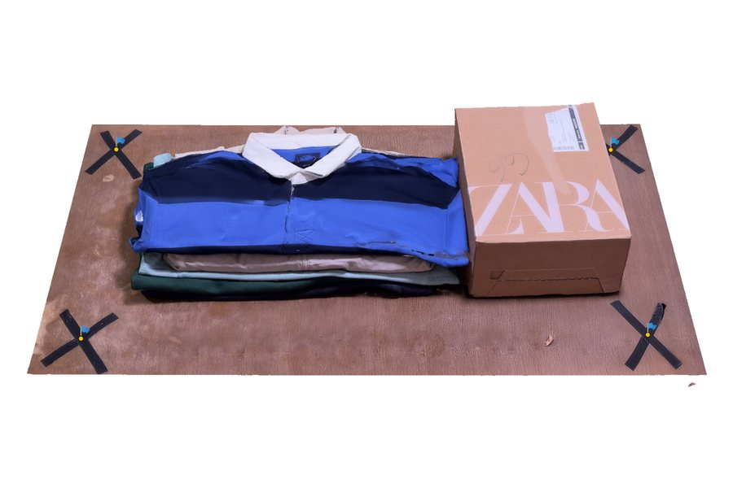
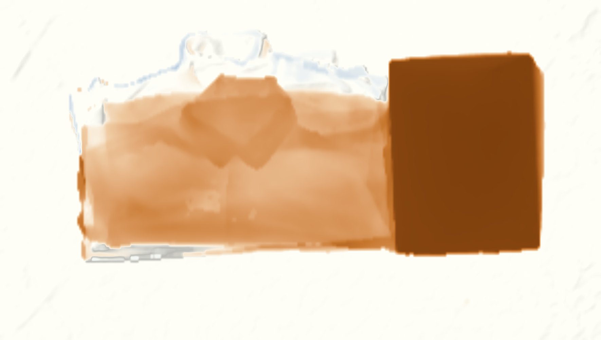

Plate VI · Structure from Motion · October 2026
A Demolition on the Dining Table
Seven phone videos, four taped markers, and a 7 cm change measured to within a millimetre.
- Stack height drop
- 7.0 cm (tape 7.1)
- Box removed
- −15.5 cm
- Level of detection
- ±0.63 mm
- Model-to-model fit
- 0.46 mm
Two of the ways cities change: buildings come down entirely, or they lose a few floors. I wanted to see whether a phone could measure both, so I staged them on a 1 × 0.5 m table: a folded stack of shirts as a mid-rise, a shoebox as a tower, and four taped crosses as survey markers. Between two visits, the top two shirts and the box went away.
From video to surface
Each visit was filmed in 4K as a low circle, a high circle at 45° and an overhead pass. A script kept the sharpest frame in each half-second window: 102 frames before, 117 after. Every frame that passed the quality check aligned, with a reprojection error of about one pixel.

1 · Cameras & tie points
2 · Dense cloud
3 · Mesh
4 · TextureThe marker centres were found automatically, by fitting two lines to each tape cross and intersecting them in every frame where it appears. The six tape distances then gave the model its scale, to about 6 mm horizontally and under half a millimetre in height.
Measuring the change
Strip away the photo and what's left is the surface itself. Both visits became a digital surface model on exactly the same 4 mm grid.
Subtracting one surface from the other gives the change. To know what counts as real, I measured the difference on 2,222 cells of table that nobody touched: a mean of −0.25 mm, which puts the 95% level of detection at ±0.63 mm. Against that, the box shows as a uniform 15 cm loss, and at the centre of the stack the surface dropped 7.0 cm; a ruler said 7.1.

Box removed −15.5 cm Stack, centre −7.0 cm Untouched table −0.25 mm| What | Model | Tape | Difference |
|---|---|---|---|
| Stack drop, centre 10 × 10 cm | 7.0 cm | 7.1 cm | −1.5% |
| Box height | 15.4 cm | 14.7 cm | +4% |
| Box volume removed | 17.6 L | 15.2 L | +16%1 |
| Clothes volume removed | 10.8 L | ≈ 11.8 L | −8% |
| Untouched table | −0.25 mm | 0 | RMSE 0.32 mm |